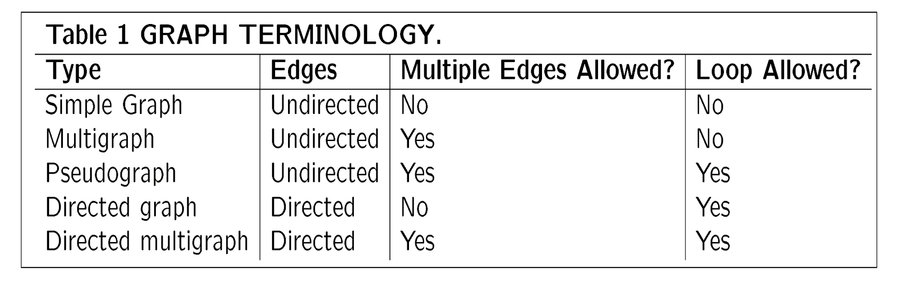

摘要
!!! info "注意" 如果latex渲染未成功加载,请刷新网页!
Chapter 1
| 英文 | 中文 | 数学符号 |
|---|---|---|
| disjunction | 并 | $\cup$ |
| conjunction | 交 | $\cap$ |
| lemma | 引理 |
Chapter 7 Relations
7.1 Relations and their properties
- We write $aRb$ for $(a,b) \in R$
Definition: A binary relation R between A and B is a subset of Cartesian product $A \times B$ : $R \subseteq A \times B$
When $A=B$, $R$ is called a relation on set $A$.
-
Distinguish domain and range. (just like function)
-
n-ary relation: n is called its degree.
-
The composite of R and S is the relation: $S \circ R = {(a,c)|a \in A, c \in C \quad \exists b \in B}$ such that $(a,b)\in R$ and $(b,c)\in S$
-
Power: $R^{n+1} = R^n \circ R$
-
Inverse:$R^{-1} = {(y,x)|(x,y) \in R}$
-
Reflexive / Irreflexive: R is reflexive $\Leftrightarrow \forall x \in A, (x,x) \in R$
-
symmetric / antisymmetric:
R is symmetric $\Leftrightarrow \forall x, y \in A, (x,y)\in R \Rightarrow (y,x)\in R \Leftrightarrow R^{-1} = R$
R is antisymmetric: $\Leftrightarrow \forall x, y \in A, (x,y)\in R \quad and \quad (y,x)\in R \Rightarrow x = y \Leftrightarrow R \cap R^{-1} \subseteq R_=$
Non-symmetric $\not\Leftrightarrow$ antisymmetric (eg. $R_=$)
- R is transitive $\Leftrightarrow \forall x, y, z \in A((x,y)\in R \wedge(y,z) \in R) \Rightarrow (x,z)\in R$
Theorem:R on a set A is transitive if and only if $R^n \subseteq R$ for $n = 2, 3, \dots$
Inductive step: $R^{n+1}$ is also a subset of $R$
7.2 Representing Relations
- Matrices representation.
- reflexive $\Leftrightarrow$ All terms $m_{ii}$ in the main diagonal of $M_R$ are 1
- symmetric $\Leftrightarrow m_{ij} = m_{ji}$ for all $i,j$.
- anti-symmetric $\Leftrightarrow$ if $m_{ij} = 1 $ and $i\not= j$ then $m_{ij} = 0$
- Transitive $\Leftrightarrow$ whenever $c_{ij}$ in $C=M_R^2$ is nonzero then entry $m_{ij}$ in $M_R$ is also nonzero
- Digraphs representation.
- A edge $(a,b)$, a isiInitial vertx and b is terminal vertex
- A edge of form $(a,a)$, called loop
- reflexible $\Leftrightarrow$ There are loops at every vertex of digraph.
- symmetric $\Leftrightarrow$ Every edge between distinct vertices is accompanied by a edge in the opposite direction.
7.3 Closures of Relations
- Definition: $R \& S$ are relation,while S satisfy:
- S with property P and $R \subseteq S$
- $\forall S'$ with property P and $R \subseteq S'$ , then $S \subseteq S'$
- Theorem: R be a relation on set A.
- The reflexive closure of relation R: $$ r(R) =R \cup \Delta $$ , where $\Delta = {(a,a)|a \in A}$
- The symmmetric closure of relation R: $$ S(R) = R \cup R^{-1} $$
- Definition: Path is a sequence of one or more edges in graph G.
Theorem: Let R be a relation on set $A$. There is a path of length n from a to b $\Leftrightarrow (a,b) \in R^n$
- Definition: The connectivity relation $R^ = {(a,b)|\text{there is a path from a to b}}$. $$ R^ = \cup^{\infin}_{n=1} R^n $$
Theorem: The transitive closure of R : $$ t(R) = R^* $$
- WARSHALL'S algorithm!
7.4 Equivalence Relations
-
Definition: Relation $R$~ : $A \leftrightarrow A$ is an equivalence relation, if it reflexive, symmetric and transitive.
-
Definition: Let $R: A \leftrightarrow A$ is an equivalence relation. For any $a \in A$, the equivalence class of a is the set of the elements related to a. $$ [a]_R = {x\in A|(x,a) \in R} $$ . If $b\in [a]_R$. b is called a representative of this equivalence class.
The properties of equivalence classes are: 1. $\forall a \in A, a[R] \not ={\emptyset}$( by reflexive, $a \in [a]R$ ) 2. $\forall a,b \in A, [a]_R = [b]_R$ or $[a]_R \cap [b]_R = \emptyset$ (by symmetric and transitive) 3. $ \cup{a\in A}[a]R = A$ ($A \subseteq \cup{a\in A}, [a]_R \subseteq A$) 4. $[a]_R \cap [b]_R \not = \emptyset \Rightarrow [a]_R = [b]_R$ (by symmetric and transitive)
-
Definition: The set of all equivalence classes of R is called the quotient set of A by R. $$ A/R = {[a]_R|a \in A} $$
Remark: 1. If A is finite, then $|A/R| $ is also finite. 2. If A has n elements, and if every $[a]_R$ has m elements, then $|A/R| = n/m$
-
Definition: A partition $\pi$ on a set $S$ is a family of nonempty subsets of $S$ such that every element of $S$ is in exactly one of these subsets. $$ \pi = {A_1, A_2, \dots, A_n}\
- \cup_{k=1}^n A_k =S \
- A_j \cap A_k = \emptyset \text{ for every j,k with }j \not= k, 1 < j, k < n
$$
Theorem: Let $R$ be an equivalence relation on a set $S$. Then the equivalence of classes of $R$ form a partition of $X$. Conversely, given a partition ${A_i|i \in I}$ of $S$, there is an equivalence relation $R$ on $S$ such that the equivalence classes of $R$ are the sets $A_i$.
7.5 Partial Orderings
-
Definition: A relation $R_{\preceq}$ on a set $S$ ($S \leftrightarrow S$) is a partial ordering if it is reflexive, antisymmetric and transitive.
-
Definition: The element a and b of s poset $S$ are comparable if either $a \preceq b$ or $b \preceq a$. Otherwise, a and b are incomparable.
- Definition: A poset $S$ is a total ordering or linear ordering if every pair of elements of $S$ is comparable. A totaly ordered set is also called a chain.
- Lexicograpic order: Construct a poset $S$ by taking the Cartesian product of two posets $S_1$ and $S_2$. The relation $\preceq$ on $S$ is defined by $$ (a_1, a_2) \preceq (b_1, b_2) \Leftrightarrow a_1 \preceq_1 b_1 \text{ and } a_2 \preceq_2 b_2 $$
-
hasse diagram: A hasse diagram of a poset $S$ is a diagram that represents the poset $S$ using points and line segments. The points of the diagram are the elements of $S$, and there is a line segment between $a$ and $b$ if $a \prec b$ and there is no element $c$ such that $a \prec c \prec b$.
- Start with the directed graph for the relation.
- Remove all loops.
- Remove all edges that must be present because of the transitive property.
- Finally, arrange each edges so that its initial vertex is below its terminal vertex, Remove all arrows.
-
Definition: Let $(A, \preceq)$ be a partial ordered set, $B\subseteq A$.
- a is a maximal element of B if there is no element $b \in B$ such that $a \prec b$.
- b is a minimal element of B if there is no element $b \in B$ such that $b \prec a$.
- a is a greatest element of B if $a \preceq b$ for every $b \in B$.
- b is a least element of B if $b \preceq a$ for every $b \in B$.
- a is an upper bound of B if $b \preceq a$ for every $b \in B$.
- b is a lower bound of B if $a \preceq b$ for every $b \in B$.
- a is the least upper bound of B if a is an upper bound of B and if $a \preceq c$ for every upper bound c of B.
- b is the greatest lower bound of B if b is a lower bound of B and if $c \preceq b$ for every lower bound c of B.
Remark: Can have many minimal/maximal elements, but only one least/greatest element.
-
Definition: A poset $S$ is a lattice if every pair of elements of $S$ has a least upper bound and a greatest lower bound.
Chapter 8 Graph
-
Definition: A graph $G$ is an ordered pair $(V,E)$, where $V$ is a finite nonempty set and $E$ is a set of two-element subsets of $V$ which is called edges.
Definition: A multigraph is a graph that is permitted to have multiple edges with the same endpoints.(don't have loops)
Definition: A pseudograph is a graph that is permitted to have loops. Sum table: 
-
Terminology:
- Two vertices u and v are adjacent or neighbors if {u,v} is an edge of G.
- If {u,v} is an edge of G, then u and v are incident with the edge {u,v}.
-
The degree of a vertex v, denoted by deg(v), is the number of edges incident with v, with loops counted twice.(Pendant vertex: deg(v) = 1)
-
Theorem: Let $G = (V,E)$ be a graph with $n$ vertices and $m$ edges. Then $$ \sum_{v \in V} deg(v) = 2m $$
Corollary(结论): The number of vertices of odd degree in any graph is even. Corollary: $$ \sum_{i=1}^{n}{deg^{-}{v_i}} = \sum_{i=1}^{n}{deg^{+}{v_i}} = |E|$$
-
Some simple graph
- complete graph: $K_n$ is a simple graph with n vertices and exactly one edge between each pair of distinct vertices.($|E| = \frac{n(n-1)}{2}$)
- cycles: $C_n$ is a simple graph with n vertices $v_1, v_2, \dots, v_n$ and edges ${v_1, v_2}, {v_2, v_3}, \dots, {v_{n-1}, v_n}, {v_n, v_1}$
- wheels: $W_n$ is a simple graph with n vertices $v_1, v_2, \dots, v_n$ and edges ${v_1, v_2}, {v_2, v_3}, \dots, {v_{n-1}, v_n}, {v_n, v_1}, {v_1, v_3}, {v_1, v_4}, \dots, {v_1, v_n}$
- n-cubes: $Q_n$ is a simple graph with $2^n$ vertices $v_1, v_2, \dots, v_{2^n}$ and edges ${v_i, v_j}$ if and only if $v_i$ and $v_j$ differ in exactly one bit position.
- bipartite graph: A graph $G = (V,E)$ is bipartite if $$ V = V_1 \cup V_2 \ V_1 \cap V_2 = \emptyset$$ such that no edge has both endpoints in the same subset.
-
complete bipartite graph: $K_{m,n}$ is a bipartite graph with $m+n$ vertices $v_1, v_2, \dots, v_m$ and $u_1, u_2, \dots, u_n$ and edges ${v_i, u_j}$ for all $i = 1, 2, \dots, m$ and $j = 1, 2, \dots, n$.
-
New graphs from old:
- subgraph: $G' = (V', E')$ is a subgraph of $G = (V,E)$ if $V' \subseteq V$ and $E' \subseteq E$.
- complement: $G' = (V, E')$ is the complement of $G = (V,E)$ if $E' = { {u,v} | u,v \in V, u \not= v, {u,v} \not\in E}$
- union: $G_1 = (V_1, E_1)$ and $G_2 = (V_2, E_2)$, then $G_1 \cup G_2 = (V_1 \cup V_2, E_1 \cup E_2)$
-
join: $G_1 = (V_1, E_1)$ and $G_2 = (V_2, E_2)$, then $G_1 \vee G_2 = (V_1 \cup V_2, E_1 \cup E_2 \cup { {u,v} | u \in V_1, v \in V_2})$
-
Representing graphs:
- adjacency matrix: $A = (a_{ij})$ is a $n \times n$ matrix such that $a_{ij} = 1$ if ${v_i, v_j} \in E$ and $a_{ij} = 0$ otherwise.
- incidence matrix: $B = (b_{ij})$ is a $n \times m$ matrix such that $b_{ij} = 1$ if $v_i$ is incident with $e_j$ and $b_{ij} = 0$ otherwise.
- adjacency list: For each vertex $v_i$, we have a list of all vertices adjacent to $v_i$. (for directed graph, we have two lists for each vertex, one for the vertices adjacent to $v_i$ and one for the vertices from which there is an edge to $v_i$)